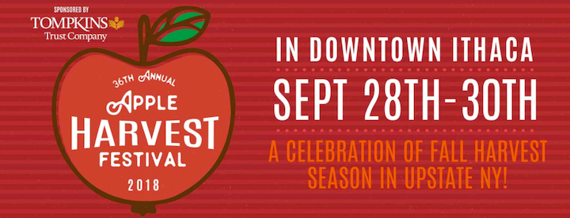

source
Ithaca’s premier event of the Fall, Apple Harvest Festival is a three day celebration of food, fun, and apples!
Come enjoy a variety of apple based products such as cider, donuts, and pies, all grown in the Ithaca area. There's also a wide selection of non-apple products and events, detailed on our Events and People page.
Get a taste of Cornell University with the Cornell developed apples, such as the SnapDragon and Ruby Frost.
On this site, you can find specific details about the logistics of the festival, such as hours, location, and suggested means of transportation. You can also learn about past events, sponsors, and vendors. Any more information not here you can get from the contact below!
Contact the Downtown Ithaca Alliance:
Phone: (607) 277-8679
Fax: (607) 277-8691
Email: info@downtownithaca.com